ИИСУС в еврейском искусстве
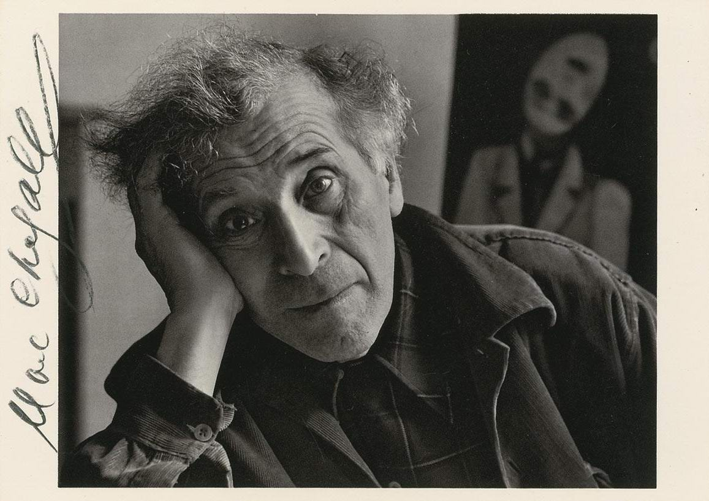
Автор: Рич Робинсон из материалов cis.jewsforjesus.org
В последнее время среди еврейских историков стало модно представлять столь спорную еврейскую личность, как Иисуса, в хорошем свете. Однако в еврейском искусстве упоминания об Иисусе чрезвычайно редки.
Есть, конечно, примеры в литературе, когда евреи сталкиваются с христианами как представители еврейского мира и чуждого им мира язычников. Обычно эта тема касается искушения ассимиляции. Однако очень редко обсуждается вопрос о личности Иисуса и Его значении для современного еврейства.
В наше время лишь один всемирно известный еврейский художник – Марк Шагал – рискнул исследовать значение Иисуса для своего народа. Именно он во всю мощь заявлял о том, как современным евреям нужно воспринимать Йешуа (Иисуса).
Давайте внимательно присмотримся к его искусству и к его необычному еврейскому взгляду на Иисуса.
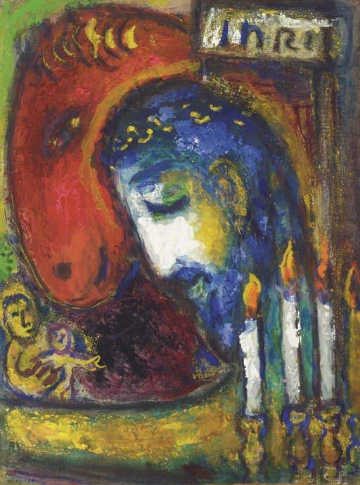
Американским евреям Марк Шагал, наверное, больше известен своими витражами, посвященными двенадцати коленам сынов Израилевых (см. здесь). Для других имя Шагала ассоциируется с образами странных зеленых лошадей или с многоцветными, в стиле Пикассо, сценами из жизни штетла. Обзор работ этого художника должен учитывать все многообразие тем, которые он писал: его родной Витебск, страдания евреев, галерея библейских мотивов и т.д. В этой статье мы поговорим только о тех его работах, которые касаются Йешуа.
Работы Шагала о Йешуа можно разделить на две категории. Первая – это сцены распятия. Шагал проявил большое мужество, решившись писать на эту тему, поскольку в сознании большинства евреев распятие Иисуса ассоциируется с гонениями на еврейский народ. Но на полотнах Шагала можно заметить, что Йешуа изображен как религиозный еврей. Более того, распятый Йешуа служит здесь символом гонений на евреев всего мира, особенно в период Холокоста. На этих полотнах нет и намека на какой-либо иной символизм, кроме общего еврейского страдания.
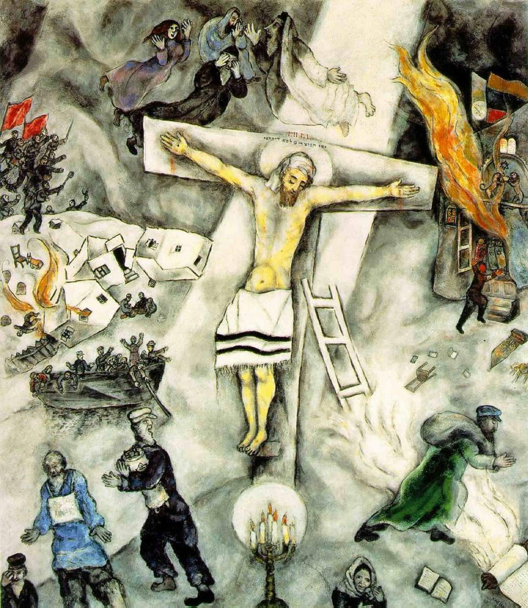
Франц Мейер, биограф Шагала, описывает картину «Белое распятие» как «первую в длинной серии работ». Вот что он говорит: «Хотя в центре этой картины Христос, она ни в коей мере не является христианской… На бедрах Христа – ткань с двумя черными полосами, как у еврейского талеса, а у его ног горит семисвечник… Но, что самое главное, – отношение этого Христа к миру радикально отличается от всех христианских изображений распятия. Там… все страдание сосредоточено на Христе, возложено на Него, чтобы Он преодолел его своей жертвой… Здесь же, хотя все страдания мира и отражены в распятии, они остаются судьбой человечества и со смертью Христа не исчезают» 1
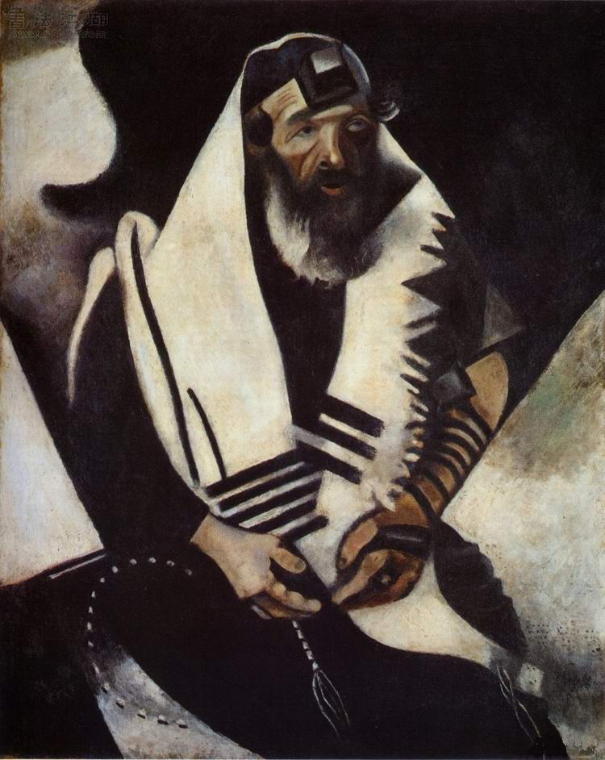
Тот же образ еврейского, но не мессианского Иисуса виден в «Желтом распятии». Здесь Шагал изображает «распятого Христа типичным иудеем: на голове – филактерии, на руку намотан молитвенный ремешок…» 2
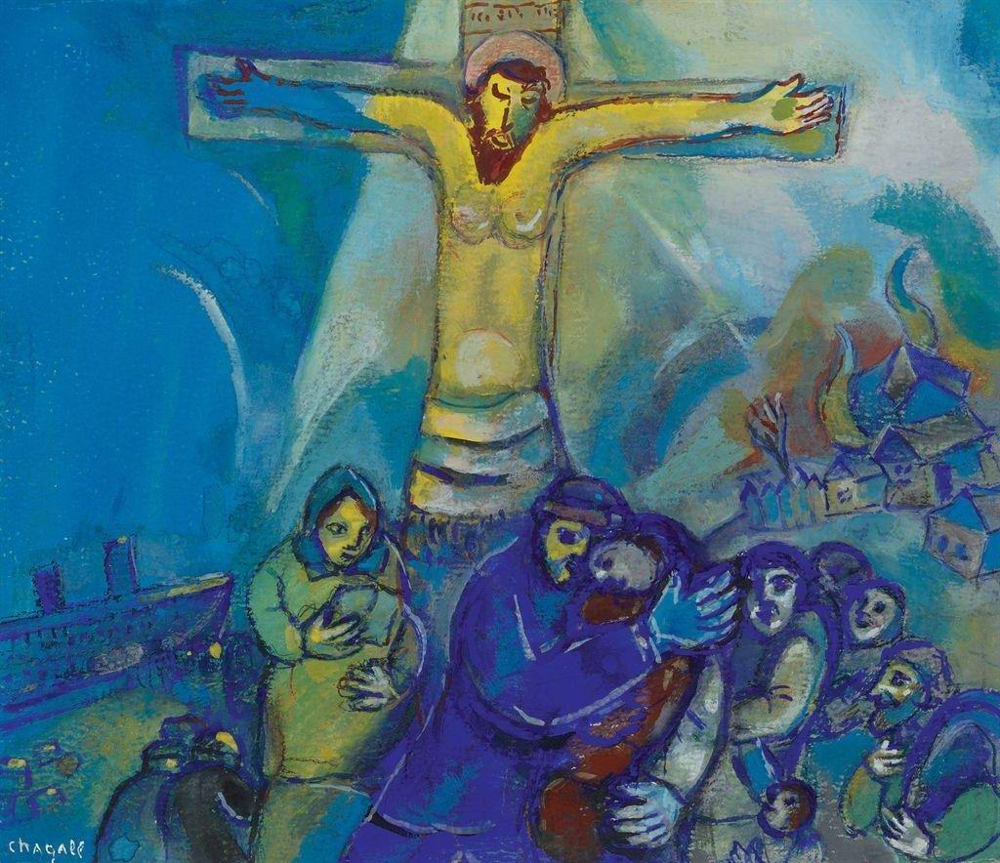
Во второй категории картин о Йешуа Шагал добавляет мессианский нюанс. Сидней Александр так сравнивает их с образами страданий в ранних работах Шагала: «В работах последней четверти столетия… распятие уже явным образом не символизирует мученичество евреев… Тот факт, что Шагал считает Иисуса одним из величайших еврейских пророков (как он и сам заявлял неоднократно и как мне говорил об этом его сын Давид), полностью согласуется с историей и с определенной разновидностью либерального иудаизма. Но когда он делает распятие фоном своей «Лестницы Иакова» или «Сотворения человека», он приглашает зрителя прочитать его иконографию как христианское осуществление иудейских предзнаменований». 3
Далее Александр говорит, что Шагал только хотел «предоставить "универсальные" символы». 4
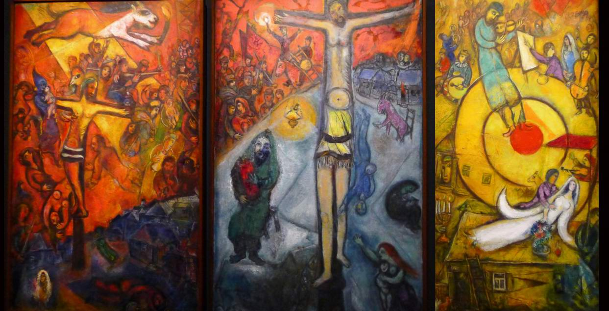
Насколько нам известно, Марк Шагал не был верующим в Йешуа как Мессию. Но поскольку Шагал был хорошо знаком с западным религиозным искусством, он, конечно, знал и христианское толкование отдельных мест Танаха как предсказаний о жизни Иисуса. В своих работах он даже следует идее взаимосвязи между Ветхим и Новым Заветом. Эта взаимосвязь особенно видна в таких его работах, как «Принесение в жертву Исаака» (см. стр. 4), где на заднем плане акеды (связывания Исаака) виден Йешуа, несущий крест. Более того, поток красного цвета, очень напоминающий кровь, «течет» к Аврааму прямо от Иисуса, изображенного с крестом в правом верхнем углу картины. И в Ветхом, и в Новом Завете Бог использует кровь, чтобы искупить грех. Так что на этом полотне мы находим не только соединение акеды с распятием, но здесь также присутствует мысль о том, что смерть Иисуса принесла очищение. А если принять во внимание, что «Принесение в жертву Исаака» является частью целой серии картин под названием «Библейское послание», то становится ясно, что Шагал понимал ассоциацию этих образов. И, как обычно происходит в великих шедеврах, эти полотна выходят за рамки своего сюжета. Они поднимают вопрос о важности взаимосвязи Ветхого и Нового Завета для современных евреев.
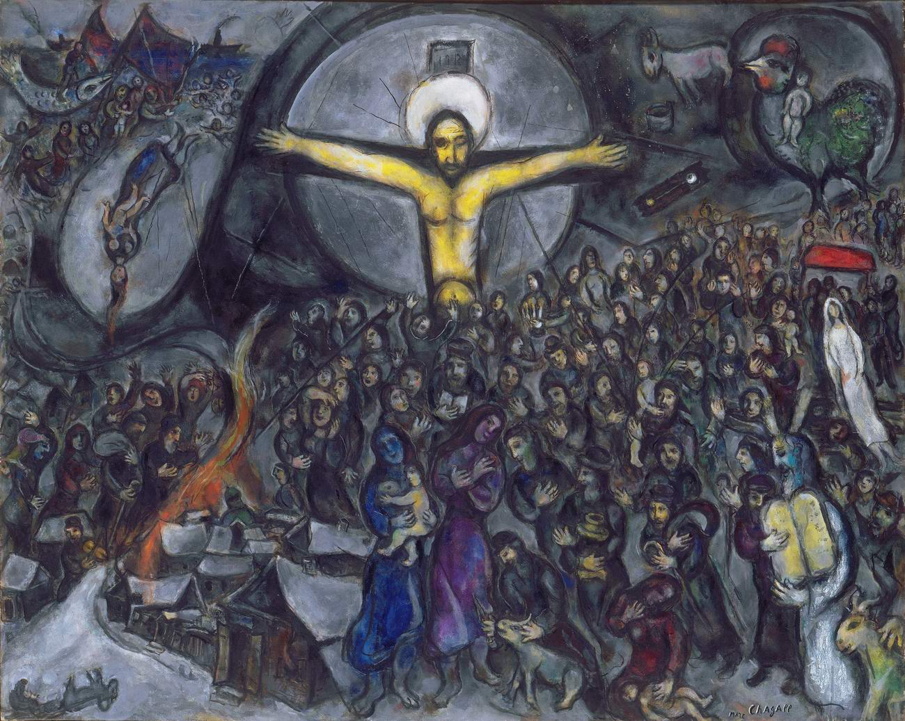
Образ Исаака-Христа можно найти не только здесь. Вот что пишет Зива Амишай-Майсельс о гобелене «Исход», который сейчас висит в помещении Кнессета в Иерусалиме: «Связь этих персонажей была приемлемой в христианском контексте, где Исаак был прототипом Христа, а принесение его в жертву – пророчеством о распятии. Но такое сочетание в Кнессете бы не приняли, и Шагалу посоветовали не писать эту тему. Тем не менее, нелегко было заглушить личное убеждение художника в том, что Христос – истинный символ страданий еврейского народа… Христа на этой картине нет, но Исаак лежит на жертвеннике с широко разведенными руками, как будто изображая крест,… что очень отличается от положения тела Исаака в похожих сценах в предыдущих картинах». 5
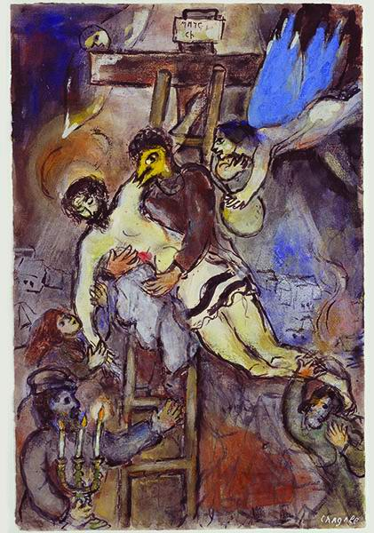
Хочу повторить, что в этих картинах Иисус служит не просто символом страданий евреев. Шагал осознает связь между Исааком и Христом в христианском понимании. Эта связь становится очевидной в его картине «Пророчество Исаии», где Шагал пишет не распятого Христа, а младенца Иисуса. «В [некоторых] работах он наложил темы Ветхого Завета, которые и сформировали множество его сюжетов, на соответствующие эпизоды Нового Завета в попытке смешать два Завета, указав на их преемственность. Именно поэтому он добавил Христа, несущего крест, в картину принесения в жертву Исаака, которое в христианском богословии служит прообразом распятия. По этой же причине он изобразил Мадонну с Младенцем в углу картины пророчества Исаии, в котором христиане видят рождение Иисуса». 6
Chagall 8Но Мадонна с Младенцем не получила традиционной протестантской или католической трактовки. Над ними на картине стоит фигура «мужчины, напоминающего моэля. Добавление этой фигуры акцентирует внимание на еврейской природе младенца, рожденного этой женщиной,… поскольку Иисус был обрезан». 7
Работы Шагала не всегда вызывали положительный отклик. С.Л. Шнайдерман писал в журнале «Мидстрим» в 1977 г., что его особенно огорчило то, что работы Шагала на эти темы стали витражами в нескольких соборах во Франции. «С некоторой осторожностью евреи все-таки стали постепенно принимать его мотивы Христа как символа еврейских страданий… Однако работы Шагала, описывающие Иисуса и принятые соборами, не несут никакой связи с еврейским мученичеством. Они стали простыми иллюстрациями евангельских повествований». 8
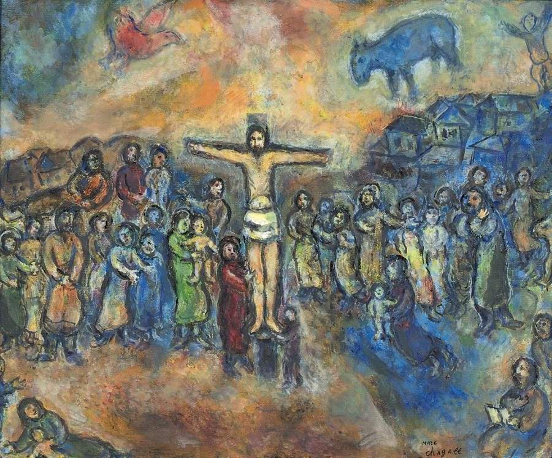
Шнайдерман цитирует слова французской писательницы Раисы Маритайн о Шагале: «С несомненной интуицией он показал в каждой из своих работ о Христе незыблемую связь между Ветхим Заветом и Новым. Ветхий Завет был предвестником Нового, а Новый Завет стал исполнением Ветхого». С неодобрением Шнайдерман говорит далее, что «Шагал не выразил несогласия со словами м-ль Маритайн, и позднее, два десятилетия спустя, эти слова были включены в каталог, описывающий самую большую ретроспективную выставку его работ». 9
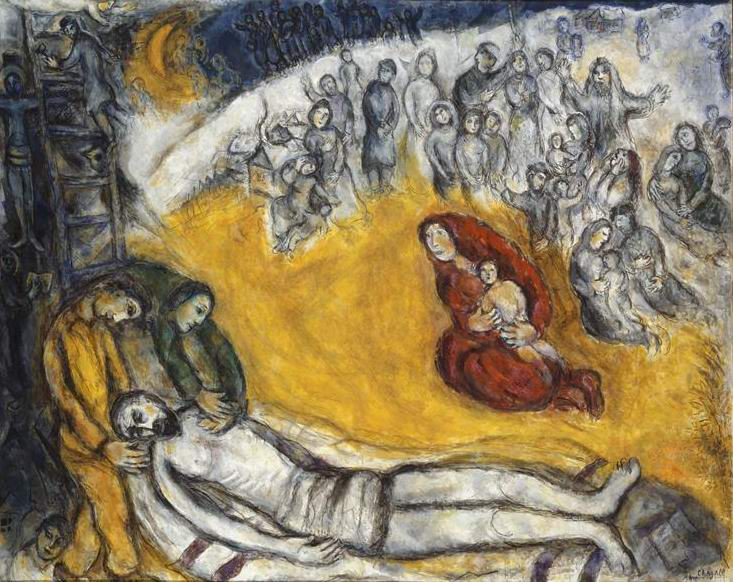
Шнайдерман также пересказывает беседу еврейского поэта Авраама Суцкевера с Шагалом, опубликованную в тель-авивском журнале на идише «Ди голдене кейт»: «Позже я узнал в Париже, что Шагал также просил совета у главного раввина Франции [насчет работы для одной церкви в Венеции]. Главный раввин… сказал тогда Шагалу очень просто: «Все зависит от того, веришь ли ты в это». 10
К сожалению, Шнайдермана не слишком радует возможность того, что Шагал мог все-таки верить в это. Сейчас мы не будем обсуждать, имел Шагал такую веру или нет. Но в калейдоскопе его работ о Йешуа само его искусство ставит перед нами вопрос: «Верим ли в это мы? И если нет, то почему?» Традиционный ответ «евреи не верят в Иисуса» уже не подходит. Увидев работы Шагала, считающегося величайшим еврейским художником 20 века, давать такой ответ уже нельзя.
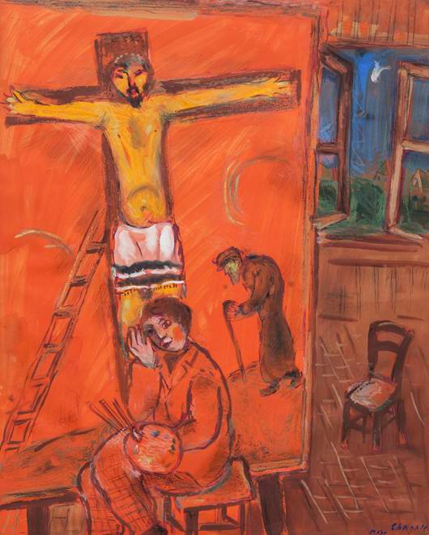
Так не является ли Йешуа обещанным Мессией? И если да, то что нам с этим делать?
1. Франц Мейер, Марк Шагал: Жизнь и Слово (N.Y.: Abrams). сс. 414-415. 2. Мейер, с. 446.
2. Мейер, с. 446.
3. Сидней Александр, Марк Шагал: Биография (N Y Putnam, 1978).
4. Александр.
5. Зива Амишай-Майсельс, Полотна и Мозаики Марка Шагала в Кнессете (N.Y.: Tudor), с. 47.
6. Амишай-Майсельс, с. 79.
7. Амишай-Майсельс, с. 81.
8. С. Л. Шнайдерман, "Шагал – порван”. Мидстрим. Июнь-июль 1977. с. 49.
9. Шнайдерман, с. 53. 10.
10. Шнайдерман, «Ди голдене кейт» (№№79-80, 1973), с. 62.
смотрите также другую публикацию канала "That Jew Died for You" на эту тему
см. также фильм "Послание от Марка Шагала"